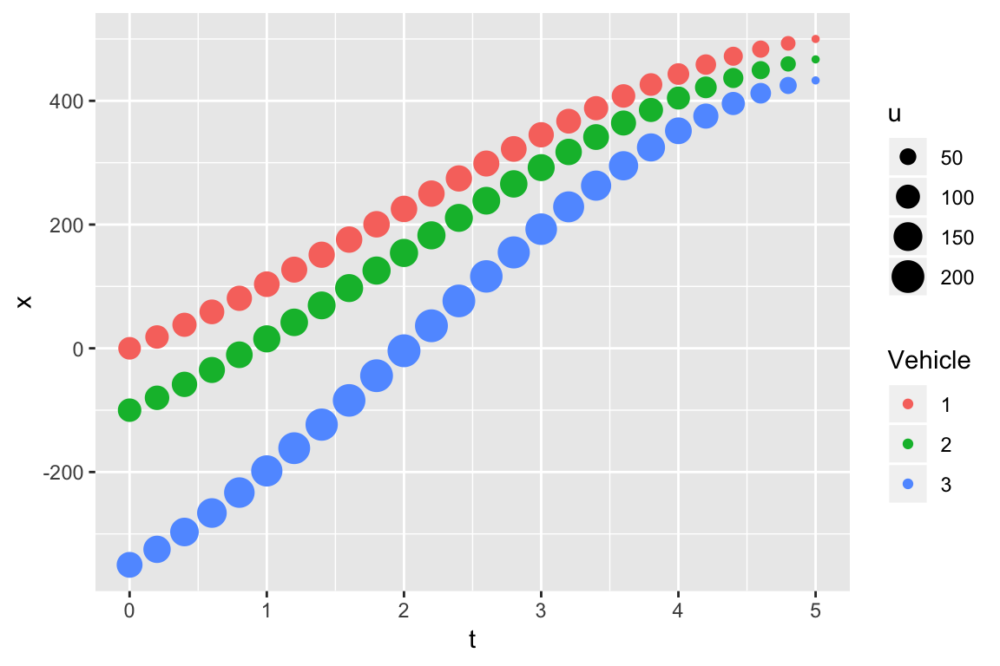

Bottleneck
Now, we turn attention to a bottleneck where there is a lane drop from two to one-lane. To better understand to various factors that can affect a breakdown, we will investigate a “zipper merge.”
1. A Zipper Merge
Imagine that we shrink ourselves down to a size that is sufficiently small to observe a zipper close. That’s right, a zipper. Let’s say, a jacket zipper. We will stand on the zipper pull and look in the direction where zipper tapes are separated. This is analogous to standing on the side of a roadway looking upstream where the vehicles merge at a bottleneck. Regardless of how fast the zipper slider is pulled, the zipper tapes become secure when meshed together because the rows of zipper teeth are the same size, move at the same speed, are evenly spaced and aligned to allow the two tapes to link together. The incoming vehicles on a freeway, on the other hand, are typically not the same size, not traveling at the speed, not evenly spaced, and not aligned. Instead, vehicles must change speed and carefully merge together to avoid crashing into one another. It is possible to achieve a zipper merge under high-speed conditions. This occurs on a motor raceway where the drivers are professionals.
To realistically depict driver behavior at a freeway bottleneck, a time-varying acceleration function is used:
\(\alpha(t) = a - b t\)
where \(t\) denotes time. The constants \(a\) and \(b\) are estimated by using boundary conditions. Knowing \(\alpha(t)\), speed $u(t) and distance \(x(t)\) can be forecast as shown in the Vehicles entering a Bottleneck animation. The zipper() function calls the two R packages as shown.


2. Car-Following

The animation depicted here consists of three vehicles. The driver of vehicle 3 is more aggressive than the other two drivers. Driver 1, who is the least aggressive, maintains a constant speed of 25 mph. Note that \(a\) = \(b\) = 0 for this driver. The \(t-x\) trajectory for vehicle 1 is a straight line with a constant slope of 25 * 5280/3600 = 36.7 feet per second (fps). The trajectories for vehicles 1 and 2 are non-linear. The merge is complete after 10 seconds. At the end of the merge, all vehicles are traveling at \(u\) = 25 mph and have a distance headway of \(h\) = 25 feet, which is assumed to be a safe distance for this speed.
Vehicle alignment is important even for this simple simulation. At \(t\) = 0, the \(t-x\) trajectory shows the vehicles 1 and 2 are located at \(x\) = 0 and vehicle 3, which is following vehicle 2, is located at \(x\) = -50 feet.
Initially, vehicles 1 and 2 are traveling side-by-side in separate lanes on a 24-foot freeway for \(x\) = 0 to hold. Further assume these vehicles are traveling in the middle of their respective lanes. Since the lane widths are 12 feet, the centerline distance between them is 12 feet.
A primary reason for showing this animation is to discuss the importance of a \(t-x\) trajectory and to describe the features of the \(\alpha(t) = a - b t\) velocity model. For example, the headways before and after the merge are \(h\) = 50 and 25 feet, respectively. This is easily seen on the \(t-x\) trajectory diagram. The traffic density at the merge is twice the value of a single lane upstream. Now, look at \(a\), \(b\), the maximum speeds of vehicle 1, 2 and 3 are 25, 32.5 and 35 mph, respectively. These speeds are within the law. Vehicle 3, whose driver is most aggressive, reaches a maximum speed of 35 mph at 4.2 seconds and then slows down to 25 mph.
A critical question do these drivers drive safety? Since the driver of vehicle 1 maintains a constant speed of 25 mph, we will answer, “Yes.” The answer for vehicle 2 is the same, “Yes.” Driver 2 reaches a maximum speed of 32.5 mph before returning to a speed of 25 mph. The trajectory for vehicle 3 “crosses” the trajectory of vehicle 1, suggesting that a side-swipe crash or near-miss may take place at \(t = 6.5\) seconds. At this point in time, the centerline distance between the two vehicles is less than 6 feet and the potential for a crash is high. Is driver 3 to blame? Let us investigate the situation further.
At around \(x\) = 50 feet or around \(t\) = 2 seconds, driver 1 can see that vehicle 3 is passing. Driver 1 has the responsibility to decelerate his or her vehicle and has ample time to do so, thus avoid a crash. The trajectories of the two vehicles would “cross” but at a point in time where the two vehicles have much more room to manuever. In other words, “crossing trajectories” can serve a warning of potential risk. The time when trajectories “cross” dictates the outcome.
Getting back to the question about driving safely. All drivers are operating within the law, then we must conclude all drivers are driving safely.
The simulation model describes and explains the triggering of a traffic breakdown event for three vehicles. It is used to introduce car-following modeling.
3. Breakdown
Car-following models describe and simulate the traffic behavior by designating lead and following vehicles. After the merge described above, vehicle 2 becomes a lead vehicle. The actions of the lead vehicle affects the following vehicles from lanes 1 and 2. The description that follows will be similiar to the behavior described above for the ring road. The \(Q = n / l * U(t)\) model is used. There are features in the following examples that we have seen before.
Again, we assume a freeway narrows from two-lanes to one. The results are shown in the Breakdown: Bottleneck diagram. The number of vehicles in the simulation remains fixed, \(n\) = 10. The lead vehicle, denoted as 1 in the figure, approaches the bottleneck at a speed of 63 mph and decelerates to a speed of 34 mph. See the Time-Speed Plot. The lead vehicle reaches this breakdown speed of 34 mph at \(x\) = 0 as shown by the point \((t_3,0)\). All following drivers must reduce their speed to avoid colliding into the vehicle in front of them.
Over the time range of 60 seconds, the speed reduction in the lead vehicle forces the following vehicles to become more closely spaced. All drivers keep a safe headway, one vehicle length for each 10 mph of speed. The \(t-x\) trajectory of the ten vehicles shown in the figure give the impression that the vehicles arrive with the same speed and headway. In fact, this is not the case:
| Vehicle | Speed at t0 | Speed at t3 | Density at t1 |
|---|---|---|---|
| 1 | 63 | 48 | 60 |
| 2 | 57 | 46 | 49 |
| 3 | 61 | 43 | 56 |
| 4 | 79 | 42 | 57 |
| 5 | 64 | 42 | 55 |
| 6 | 64 | 42 | 64 |
| 7 | 80 | 41 | 50 |
| 8 | 68 | 41 | 58 |
| 9 | 50 | 40 | 55 |
| 10 | 56 | 40 | 54 |
The level-of-service estimates are:
| Mean headway \(\bar{h}\) | Headway standard deviation \(\hat{\sigma}_h\) | Estimated flow \(\bar{q}\) |
|---|---|---|
| 6.7 seconds | 20 seconds | 537 vehicles per hour (vph) |
Contrast the “Bottleneck” situation to where the same vehicles come a full stop at a signal. The “Full Stop” vehicles experience longer delays as can be seen in the following diagram, which is no surprise. The “Full Stop” vehicles are stacked up on the downstream side of the \(x = 0\) line. It forms shockwave of stopped vehicles that move upstream. The “Bottleneck” shows the shockwave moving upstream of vehicles that are to slow down.

The classical approach is to calculate shock wave speed using the \(\Delta q/ \Delta k\) formula and a flow-density diagram. Our car-following \(CF\) approach uses the \(\alpha(t) = a - b t\) model and a function that assures the drivers drive safely. It does not use a flow-density diagram.
This approach explains queue formation differently. The \(CF\) approach shows the transistion from a free-flow to a congested state, the \(u_{-1}\) to \(u_0\) transition, to be smooth, not an abrupt change as with the classical method using a constant velocity model. The “Bottleneck” vehicles show the \(u_{-1}\) to \(u_0\) transition to be moving upstream. That means the delay spreads in two directions, upstream and downstream. The “Full Stop” vehicles have two shockwave speeds: one for breaking at \(t_1\) and one for the vehicle when it stops at \(t_3\). Both progress in the upstream direction only. Incidentally, these shockwave speeds can be estimated with the trajectories.
Input to the run function produces a collection of data frames, which we call the “cflist.” The information from these data frames can be inspected to give a detailed look at the interaction between the lead and following vehicles during a traffic breakdown.
4. Car-Following
The above figures show that the trajectories to be smooth curves. The lead vehicle use exponential \(u = exp(-\lambda * t)\) and the following vehicles use non-linear \(\alpha(t) = a - b t\) speed models. Depending on the situation, each driver adjusts his or her speed independently from one another. The lead vehicle shown below has a concave trajectory from \(t_0\) to \(t_3\), indicating a decline in speed. Vehicle 2 and 3 have linear and convex trajectories. For vehicle 3, the driver is accelerating until reaches point \((t_1, x_2)\) where it begins to decelerate.

Driver reaction and driver sight lines play important roles in the \(CF\) approach. The role they play is most easily explained by identifying the times when important events occur, \(t_1, t_2, t_3, t_4\) and \(t_5\). The simulation ranges from \(t_0\) to \(t_4\). Time \(t_3\) is the time the lead vehicle reaches the bottleneck \(x_0\) at \((t_0,x_0)\). Times \(t_1\) are the times the following vehicle drivers react and begin to decelerate. These times depend on several factors, including lead and following vehicle speeds, vehicle spacing and driver response. For example, the driver sightline for vehicle 2, shown by the broken line connecting the points \((t_1, x_1)\) and \((t_2, x_2)\), gives a sense of how this driver processes the information. The algorithm uses this information, points \((t_1, x_1)\) and \((t_2, x_2)\), to calibrate the \(\alpha(t) = a - b t\) speed model and estimate a \(t-x\) trajectory for the vehicle. This step is repeated for next vehicle that enters the bottleneck. The trajectories for each of three vehicles shown in the graph are unique. Times \(t_5\) are the times a following vehicle reach the bottleneck location \(x = 0\). They are used to estimate the time headways between vehicles, which in turn are used to estimate traffic flow \(\hat{Q}\).
5. Theory
Exploratory data analysis showed the traffic on I-93 in Salem to be extremely volatile and the chance of traffic breakdown is strong. Given these observations, it is natural to express the fundamental relationship of traffic flow as \(Q = K * U\) where \(Q\), \(K\) and \(U\) are assumed to be random variables. However, the results of the ring-road experiment gave evidence that the variability in \(Q\) depends wholly on the variability in speed, which we assumed to be a Brownian motion model \(U(t)\). The argument was simple. Since the number of vehicles on the road \(n\) and road length \(l\) are constants, it follows that the density must be a constant. Since \(k = n/l\), \(Q = k * U(t)\). Our conclusions were derived from watching a short video and assuming flow, density and speed are measured on a time scale in seconds.
The argument for the \(Q = K * U\) model is based upon macroscale observations or averages of flow, density and speed derived from 15-minute averages. In contrast, the argument for the \(Q = k * U(t)\) model is based upon assuming variables are measured on the microscale. Certainly, the simpler \(Q = k * U(t)\) model is the model of choice for bottleneck breakdown because we can envision why driver behavior can trigger a breakdown. The vehicles must merge at a bottleneck. In addition, many drivers, who drive this roadway on a regular basis, weave from one lane to another. Drivers in the NH and MA are known for their aggressiveness. By being so aggressive, they increase the traffic volatility by abruptly accelerating and decelerating. The \(CF\) approach is a tool can be refined to study aggressive driver behavior.
To justify the \(Q = k * U(t)\) model for a bottleneck, consider a “thought experiment.” In addition to collecting speed \(u_i\) data that we described above for the eight month I-93 study, a series of videos are simultaneously taken by a helicopter flying overhead or by a drone. The video data will be used to obtain direct measures of density \(k_i = n_i/l\). Next, take the matched \(k_i\) and \(u_i\) records, sort them into bins according to magnitude of traffic density, and construct a box plot. This sorting procedure treats the density data as fixed values or constants and the speed data as a random variable.
The box plot will arguably resemble of the Box Plot of Density-Speed diagram of I-93 study data presented above in the Exploratory Data Analysis section. Assuming the “thought experiment” and I-93 study data sufficiently similiar, inferences can be drawn from I-93 box-plot. By visual inspection, speed decreases as the traffic density increases. Since the bottleneck geometry is unchanged throughout the experiment, the number of vehicles \(n_i\) and speed \(u_i\) are strongly associated. Thus, the \(Q = k * U(t)\) model holds.
To be absolutely clear about the meaning of the \(Q = k * U(t)\) model for the Brownian motion speed model, \(U(t) = u + \sigma W(t) = u + \sigma \sqrt{\Delta t} Z\), we rewrite it in functional form to draw attention to the key variables:
- \(Q = f(k, u, \sigma, h)\)
where \(k = n/l\) = traffic density, \(u\) = design speed, \(\sigma\) = standard deviation of \(u\), and \(h\) represents a safe headway for vehicles of the same length.
6. Forecasting
Inspecting \(t-x\) trajectories and \(h\) histograms derived from the \(Q\) model proves to be an effective in understanding traffic breakdown and explaining being in a congested state. Given \(k\), it is possible to predict probability of traffic breakdown \(\pi\). To gain an appreciation of the \(\hat{\pi}\) forecast model, look at the Box Plot of Density-Speed diagram. We select bin of \(k\) and then determine the proportion of breakdowns \(p\) in the bin. \(p\) is straightforwardly calculated as the ratio of the number of observations where \(u \le u^*\) to the total number of observations in the bin \(k\). As previously mentioned, the HCM designates roadway capacity \(c^*\) to be in the vicinity 2250 vph at \(k^*\) = 45 vpm. The estimate of \(p\) for this bin is quite small. However, as the \(k\) values increase, the values of \(p\) increase rapidly. Expressing \(\pi\) by time-of-day we have a wortwhile tool, a macroscale model, that traffic operators and managers may find useful:
\(\hat{\pi} = P(K_t \ge k^*)\)
\(K_t\) is a stochastic differential equation model of traffic density by time-of-day \(t\) (Ossenbruggen 2017)(https://github.com/PJOssenbruggen/Basic/blob/master/doc/IEEE_MT-ITS.pdf). Treating traffic density \(K_t\) as the random variable may seem contradictory given the discussion about the \(Q = k * U(t)\) model. It is not. Note that two models are different. One is a macroscale model predicting breakdown and the other one is a microscale model predicting flow.
7. Lessons Learned
What have we learned about traffic performance using the tfuhp package? The most notable lesson learned is:
- By modeling driver behavior with a simple, parsimonious Brownian motion model of speed, it is possible to explain and forecast traffic breakdown on a ring-road and at a bottleneck.
The potential of the tfuhp package as a learning tool has been demonstrated. Hopefully, this platform can be adapted and expanded to help users identify the root cause or causes for other congestion problems. My next task is add R Markdown Shiny HTML widgets to my code. Adding this feature will allow the user to simply conduct sensitivity analyses on-line. For example, the effects of speed and density on ring-road performance can be explored. Sliders for \(u\), \(\sigma\) and \(k\) will be provided so a user change them at will. The tfuhp package will instantaneously produce a histogram of headways as illustrated above.
This package is open to the public, https://github.com/PJOssenbruggen/Basic. In other words, I am inviting people to share their experiences with the package with me. GitHub promotes this activity, https://github.com/explore.
Ossenbruggen, Paul J. 2017. “A Diffusion Model to Explain and Forecast Freeway Breakdown and Delay.” In 5th IEEE International Conference on Models and Technologies for Intelligent Transportation Systems. Naples, Italy: IEEE.